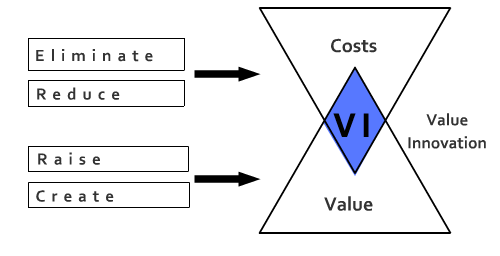
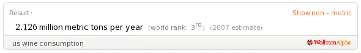
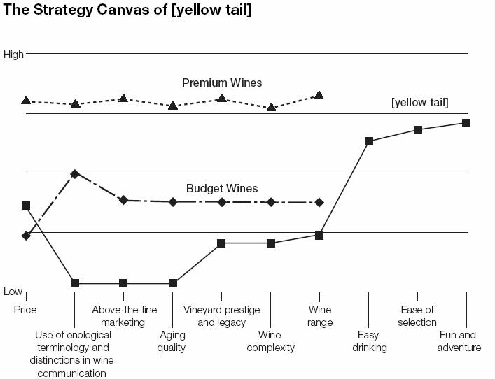
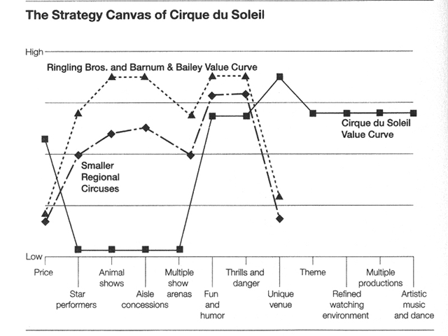
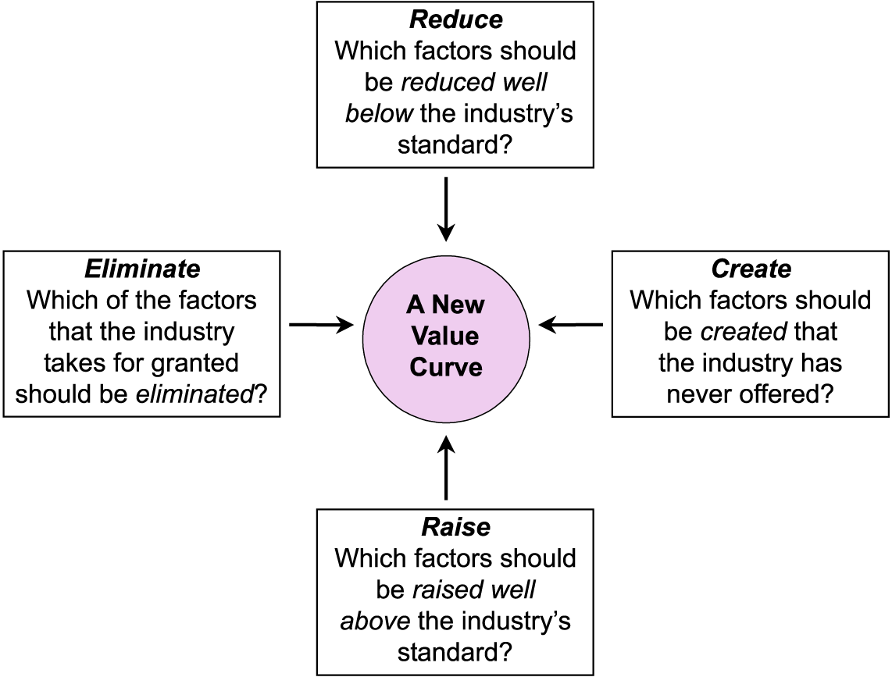
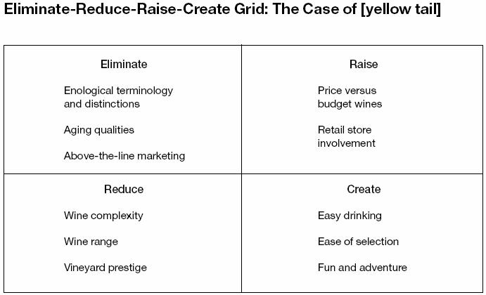
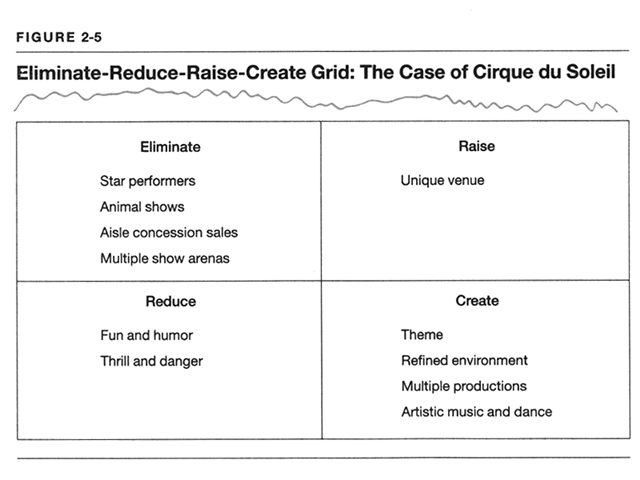

Awards
- Bestseller
- Best Book of 2005
 Top Ten Business Books of 2005
Top Ten Business Books of 2005- #1 Strategy Book of 2005
- Bestseller
 Best Business Book 2005
Best Business Book 2005- #1 Bestselling Book
- Prix des Dirigeants Commerciaux
Creating Blue Oceans
Think About
- declining industry
- limited potential growth
- supplier power was strong
- buyer power was strong
Circus Industry - 1984
- declining industry
- limited potential growth
- supplier power was strong (star performers)
- buyer power was strong
Alternative Entertainment
- sports events
- Playstation
"We Reinvent the Circus"
Cirque du Soleil
- created uncontested new market space
- adults and corporate clients
Stop trying to beat the competion
Red Oceans
- industry bondaries are defined and accepted
- rules of the game are known
Blue Oceans
- untaped market space
- demand creation
- opportunity for highly profitable growth
Q: Dominant focus of strategy (over the past 25 years)?
A: red ocean strategies
The Continuing Creation of Blue Ocean
Look back 100 years
- How many of today's industries were then unkown?
- automobiles
- music recording
- aviation
- petrochemicals
- health care
Look back 30 years
- How many of today's industries were then unkown?
- mutual funds
- cell phones
- gas-fired eletricity plants
- biotechnology
- discount retail
- express package delivery
- minivans
- snowboards
- coffee bars
- home videos
Look forwards 20 years
- What do you see?
The language of strategy
- chief executive officers
- headquatters
- troops
- front lines
- confronting an opponent
- fighting over a given piece of land
- limited and constant
Unlike war...
- market universe has never been constant
The Impact of Creating Blue Oceans

Unit of Analysis
- basic observable entity
- used to study and explain the success or failure of businesses over time
Q: Are there lasting "excellent" or "visionay" companies that continuosly outperform the market?
The strategic move is the unit of analysis upon which the logic, tools, and methodologies of blue ocean strategy are derived.
Value Innovation
Value Innovation
- Don't use the competion as your benchmark
Value Innovation
- "If I’d asked people what they wanted, they would have said a faster horse." Henry Ford
Value Innovation
- Utility
- Price
- Cost
Value Innovation (if it fails)
- Market Pioneers
- Technology innovators
Value-cost trade-off
- Greater Value @ Higher Cost
- Reasonable Value @ Lower Cost
Value Innovation
- Differentiation
- AND
- Low Cost
Value Innovation
- @ Cirque du Soleil
- Famous Clowns
- Lion Tamers
Value Innovation
- @ Cirque du Soleil
- Thrill of the Circus
- Intellectual Sophistication
- Artistic Richness of Theater
Key Factors
- @ Cirque du Soleil
- Tent
- Clowns
- Classic Acrobatics

Value innovation
- is more than innovation
- it's about strategy
Value innovation
- Leap in value
- for buyers
- AND
- for the company
Analytical Tools and Frameworks
Let's look at one industry
U.S. wine industry

- $20 billion industry
- intensely competitive
- California
- France
- Italy
- Spain
- Chile
- Australia
- Argentina
Consolidation
- Top 8 (75%)
- 1600+ (25%)
Hardly Attractive*
- intense competition
- price pressure
- increasing bargaining power
- *in conventional thinking
Q:How do you break out of this bloody competion?
A:Make the competition irrelevant.
The Strategy Canvas
Purpose #1 of 2
- captures the current state of play
Key Factors
- Price
- Enological terminology/distinctions
- Above-the-line-marketing
- Aging quality
- Vineyard prestige and legacy
- Wine complexity
- Wine range
High Offering level means
- Offers buyers more
- invests more

Purpose #2 of 2
- Reorientates your strategic focus
- competitors to alternatives
- customers to noncustomers of the industry

The Four Actions Framework
Which of the factors that the industry takes for granted should be eliminated?
Which factors should be reduced well below the industry's standard?
Which factors should be raised well above the industry's standard?
Which factors should be created that the industry has never offered?

Eliminate-Reduce-Raise-Create

